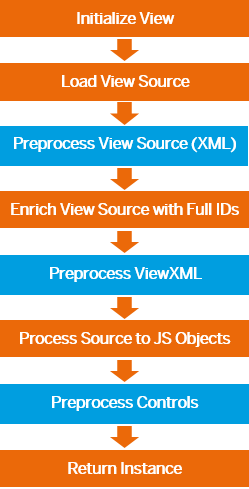

Preprocessing XML Views
Applying preprocessing to views enables you to use features like XML templating. This feature is currently only enabled for XML views. On an abstract level, preprocessing means that a view can be modified during runtime before it is rendered. This makes it possible to use the templating syntax, as it is interpreted by the preprocessor. It also makes it possible to apply user customization.
The following figure shows the different stages of view initialization. There are three hooks, XML, ViewXML and controls, which differ mainly in the source that is passed to the preprocessor.
-
XML
The raw view source in the XML format is passed to the preprocessor. This enables example templating on XML level.
-
ViewXML
The raw view source with all XML preprocessing results gets enhanced with its full IDs for the controls and passed on to the preprocessor. Adaptions on a valid view source can now be made before the XML is being parsed into a control tree.
-
Controls
The view source is already processed to the JavaScript object and the control tree is available. This enables you to make changes to the view after design time, like special customizations, stored at some persistence layer or similar, the user has made previously. Or customizations depending on the user role which are not applicable during design time.
For preprocessor for view sources of type XML or ViewXML which create cacheable results, see VML View Cache: Preprocessor Integration.
Using the Preprocessor
First, you need a preprocessor implementation. SAPUI5 provides a default preprocessor for XML templating which can be enabled by default. You can also build your own preprocessor based on the Preprocessor interface.
To use the preprocessor, you can choose one of the following options:
-
Global availability
Makes the preprocessor available to all XML views and processes it every time a View is initialized. This maybe the right case for essential operations you want to apply to every view in your application. Therefore you can make use of the registerPreprocessor method:
// "XMLView" required from module "sap/ui/core/mvc/XMLView" XMLView.registerPreprocessor("xml", "sap.ui.sample.samplepreprocessor", /* bSyncSupport = */ false, {sampleInfo: "this is a global preprocessor", moreInfo: "…"});For more information, see API Reference: sap.ui.core.mvc.XMLView.registerPreprocessor.
-
Local availability
Make a preprocessor available to one instance. This can be achieved by passing the preprocessor to the view factory function, which then processes it for this special instance. This would be the choice for smaller tasks the preprocessor should perform.
// "XMLView" required from module "sap/ui/core/mvc/XMLView" XMLView.create({ viewName: "sap.ui.core.sample.View.preprocessor.Sample", preprocessors: { xml: [{ preprocessor: "sap.ui.sample.samplepreprocessor", sampleInfo: "this is a local preprocessor", moreInfo: "…" }, { preprocessor: “another.preprocessor” }] } }).then(function(oView) { oView.doSomething(); }); -
On demand availability
This enables the developer to activate a preprocessor for a view instance, without the need to provide an implementation, by just specifying a preprocessor, which has been registered globally earlier. This is currently used by the XML templating.